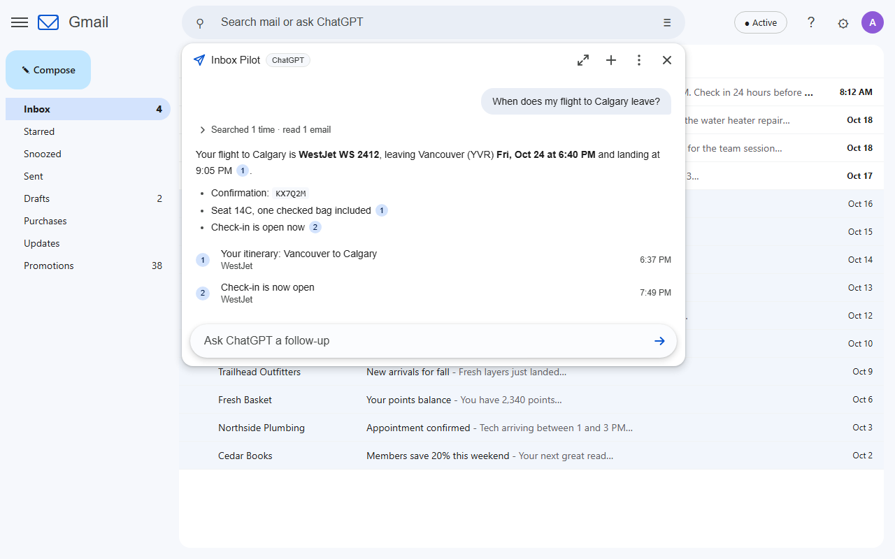
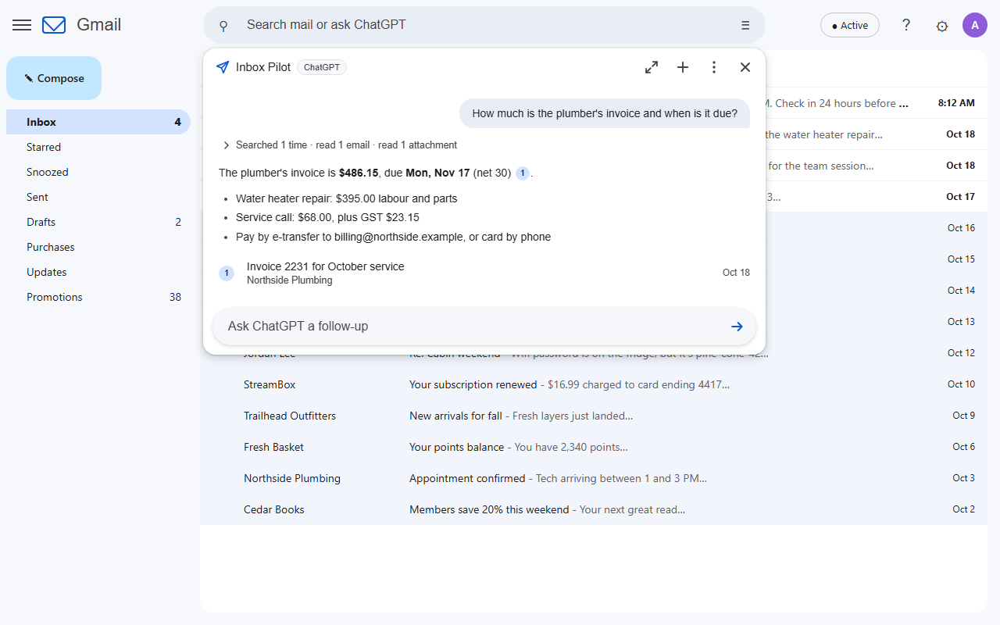
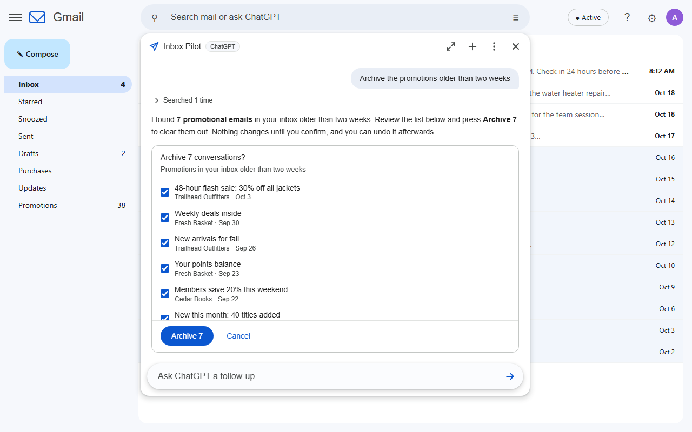
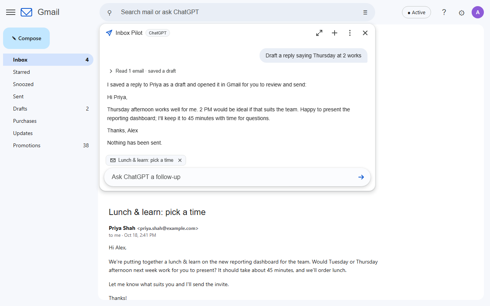
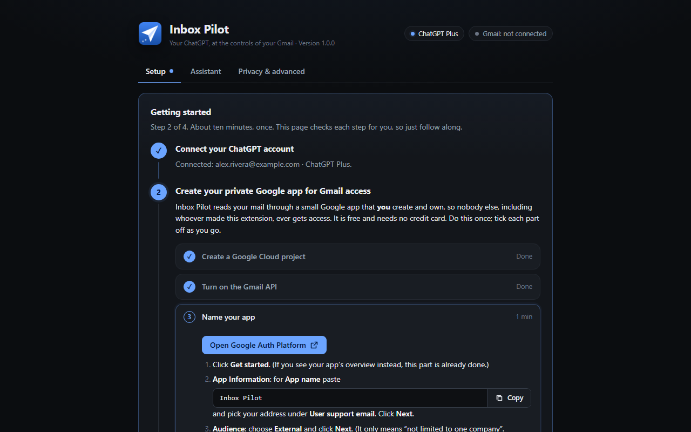

// Free and open source Chrome extension
Your ChatGPT, at the controls of your Gmail
Type a question into Gmail's search bar and press Enter. ChatGPT searches your mailbox, reads what it needs (attachments included), answers with links to the exact emails, drafts replies, tidies your inbox and fills your calendar when you ask. On your own ChatGPT plan, with no server in between.
Chrome Web Store listing in review

// What you can ask
Plain English, straight from the search bar
- When does my flight to Calgary leave, and what's the confirmation number?
- How much is the plumber's invoice and when is it due?Reads the PDF itself.
- Summarize this email and tell me what they need from meUses the email you have open.
- Draft a reply saying Thursday worksSaves a draft for you to send. It cannot send.
- Archive the promotions older than two weeksShows you the list first; Undo afterwards.
- Put my flights for the Toronto trip in my calendarRight time zones; you click Add on each.
Ordinary searches like from:bob invoice still search Gmail exactly as before. A small chip in the search bar shows whether Enter will search or ask, and one click flips it.
// Features
An assistant for your inbox, not just a chat box
Find
Questions become precise Gmail searches, retried and broadened until it finds the answer, with numbered links to the emails it used.
Read
Whole conversations and the documents attached to them, so answers come from the invoice itself, not just the email around it.
Draft
Replies threaded into the conversation, or new emails, saved as drafts and opened for you. There is no send button to misfire.
Organize
Archive, label, star, mark read, move to the inbox or Trash. You always review the exact list and confirm, and Undo puts it back.
Calendar 1.1
Turns bookings and appointments into events, with flights departing in one time zone and landing in another. Checks your schedule for clashes.
Looks like Gmail
The answer drops down under the search bar like Gmail's own suggestions, in Gmail's light or dark theme. Expand it for long conversations.
Your ChatGPT plan
Signs in with your ChatGPT account (Plus or higher, with Codex). No API key, no extra bill, and your plan's own models to choose from.
Rules coming next
"Star anything I'd regret missing and ping my phone." Automations you approve once, checked as mail arrives, synced across your computers.
// A closer look
Answers you can check, changes you approve




// Open source, no server
You don't have to take our word for it
An extension that reads your email should be one you can inspect. Inbox Pilot is open source under the GPL, and it has no backend at all: your browser talks to Google and to your ChatGPT account directly.
- No Inbox Pilot server, no analytics, nothing sent to the developer
- Gmail access through a Google app you create and own
- Requests to ChatGPT sent with storage off
- Email text treated as data: instructions inside an email are never followed
- No way to send email or delete anything permanently
- Conversations live only in the Gmail tab you asked in
// Setup
About ten minutes, once
The settings page walks you through every step with direct links, and checks each one for you.
- Connect ChatGPT. Click Connect ChatGPT, enter the short code on OpenAI's page, and approve Codex (the part of ChatGPT the extension signs in through).
- Create your own Google app. Free, no credit card: a Google Cloud project, the Gmail API, yourself as a test user, and a sign-in client whose ID you paste back. Nobody else's app ever touches your mail.
- Connect Gmail. Pick your account, continue past "Google hasn't verified this app" (it is your own app), and tick the Gmail boxes.
- Ask. Type a question into Gmail's search bar and press Enter.
Would rather skip the Google Cloud part? One-click setup is planned. Rolling it out to a team? We can set it up for you.
// Install
Get Inbox Pilot
The Chrome Web Store listing is in review. Until it is live, install it from source: download the code, run npm ci and npm run build, then load the dist folder in chrome://extensions with Developer mode on.
// FAQ
Questions
Is it really free?
Yes, every feature, with no account with us. It runs on the ChatGPT plan you already pay for. If it saves you time, you can support the project.
Which ChatGPT plans work?
Plans that include Codex: Plus, Pro, Business, Edu and Enterprise. Usage counts toward your plan's Codex limits; when you reach one, Inbox Pilot tells you when it resets.
How is this different from Gmail's "Ask Gmail"?
Ask Gmail is Google's own paid Gemini feature. Inbox Pilot uses your ChatGPT account and models, reads attachments, drafts replies, organizes mail with your confirmation, and adds events to your calendar.
Why do I have to create a Google app?
So that nobody else, including us, ever has access to your mail. Google requires apps that read Gmail to be your own or to pass a paid security review; your own app keeps it free and private. The setup guide takes about ten minutes.
Can it send email or delete things?
No. It saves drafts for you to send, and anything it moves to Trash stays recoverable for 30 days. Every change to your mailbox waits for your confirmation and can be undone.
Something isn't working
The settings page shows what is connected and the exact fix for each error Google or OpenAI can show. Still stuck? Open an issue or email James@Levac.net with your Chrome version and what the settings page says.
// Support the project
Free, with no catch
Inbox Pilot has no paid tier and holds nothing back. If it saves you time, sponsoring keeps it maintained as Gmail and ChatGPT change.
// Planned
One-click setup
A verified Google app you connect in one click, for people who would rather not create their own. Optional and paid, to cover Google's yearly security assessment; doing it yourself stays free forever.